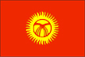

{kind=link}


![[Country map of Kyrgyzstan]](../maps/kg-map.jpg)
| Kyrgyzstan |  |
|
| | |
| Introduction |
Background: A Central Asian country of incredible natural beauty and proud nomadic traditions, Kyrgyzstan was annexed by Russia in 1864; it achieved independence from the Soviet Union in 1991. Current concerns include: privatization of state-owned enterprises, expansion of democracy and political freedoms, inter-ethnic relations, and terrorism.
| Geography |
Location: Central Asia, west of China
Geographic coordinates: 41 00 N, 75 00 E
Map references: Commonwealth of Independent States
Area:
total:
198,500 sq km
land:
191,300 sq km
water:
7,200 sq km
Area - comparative: slightly smaller than South Dakota
Land boundaries:
total:
3,878 km
border countries:
China 858 km, Kazakhstan 1,051 km, Tajikistan 870 km, Uzbekistan 1,099 km
Coastline: 0 km (landlocked)
Maritime claims: none (landlocked)
Climate: dry continental to polar in high Tien Shan; subtropical in southwest (Fergana Valley); temperate in northern foothill zone
Terrain: peaks of Tien Shan and associated valleys and basins encompass entire nation
Elevation extremes:
lowest point:
Kara-Darya 132 m
highest point:
Jengish Chokusu (Pik Pobedy) 7,439 m
Natural resources: abundant hydropower; significant deposits of gold and rare earth metals; locally exploitable coal, oil, and natural gas; other deposits of nepheline, mercury, bismuth, lead, and zinc
Land use:
arable land:
7%
permanent crops:
0%
permanent pastures:
44%
forests and woodland:
4%
other:
45% (1993 est.)
note:
Kyrgyzstan has the world's largest natural growth walnut forest
Irrigated land: 9,000 sq km (1993 est.)
Natural hazards: NA
Environment - current issues: water pollution; many people get their water directly from contaminated streams and wells; as a result, water-borne diseases are prevalent; increasing soil salinity from faulty irrigation practices
Environment - international agreements:
party to:
Biodiversity, Desertification, Hazardous Wastes
signed, but not ratified:
none of the selected agreements
Geography - note: landlocked
| People |
Population: 4,685,230 (July 2000 est.)
Age structure:
0-14 years:
36% (male 843,038; female 825,519)
15-64 years:
58% (male 1,337,268; female 1,393,397)
65 years and over:
6% (male 107,405; female 178,603) (2000 est.)
Population growth rate: 1.43% (2000 est.)
Birth rate: 26.29 births/1,000 population (2000 est.)
Death rate: 9.15 deaths/1,000 population (2000 est.)
Net migration rate: -2.81 migrant(s)/1,000 population (2000 est.)
Sex ratio:
at birth:
1.05 male(s)/female
under 15 years:
1.02 male(s)/female
15-64 years:
0.96 male(s)/female
65 years and over:
0.6 male(s)/female
total population:
0.95 male(s)/female (2000 est.)
Infant mortality rate: 77.08 deaths/1,000 live births (2000 est.)
Life expectancy at birth:
total population:
63.37 years
male:
59.06 years
female:
67.9 years (2000 est.)
Total fertility rate: 3.22 children born/woman (2000 est.)
Nationality:
noun:
Kyrgyzstani(s)
adjective:
Kyrgyzstani
Ethnic groups: Kirghiz 52.4%, Russian 18%, Uzbek 12.9%, Ukrainian 2.5%, German 2.4%, other 11.8%
Religions: Muslim 75%, Russian Orthodox 20%, other 5%
Languages:
Kirghiz (Kyrgyz) - official language, Russian - official language
note:
in March 1996, the Kyrgyzstani legislature amended the constitution to make Russian an official language, along with Kirghiz, in territories and work places where Russian-speaking citizens predominate
Literacy:
definition:
age 15 and over can read and write
total population:
97%
male:
99%
female:
96% (1989 est.)
| Government |
Country name:
conventional long form:
Kyrgyz Republic
conventional short form:
Kyrgyzstan
local long form:
Kyrgyz Respublikasy
local short form:
none
former:
Kirghiz Soviet Socialist Republic
Data code: KG
Government type: republic
Capital: Bishkek
Administrative divisions:
6 oblastlar (singular - oblast) and 1 city* (singular - shaar); Bishkek Shaary*, Chuy Oblasty (Bishkek), Jalal-Abad Oblasty, Naryn Oblasty, Osh Oblasty, Talas Oblasty, Ysyk-Kol Oblasty (Karakol)
note:
administrative divisions have the same names as their administrative centers (exceptions have the administrative center name following in parentheses)
Independence: 31 August 1991 (from Soviet Union)
National holiday: National Day, 2 December; Independence Day, 31 August (1991)
Constitution:
adopted 5 May 1993
note:
amendment proposed by President AKAYEV and passed in a national referendum on 10 February 1996 significantly expands the powers of the president at the expense of the legislature
Legal system: based on civil law system
Suffrage: 18 years of age; universal
Executive branch:
chief of state:
President Askar AKAYEV (since 28 October 1990)
head of government:
Prime Minister Jumabek IBRAIMOV (since NA December 1998)
cabinet:
Cabinet of Ministers appointed by the president on the recommendation of the prime minister
elections:
president elected by popular vote for a five-year term; elections last held 24 December 1995 (next to be held November or December 2000); prime minister appointed by the president
election results:
Askar AKAYEV reelected president; percent of vote - Askar AKAYEV 75%; note - elections were held early which gave the two opposition candidates little time to campaign; AKAYEV may have orchestrated the "deregistration" of two other candidates, one of whom was a major rival
Legislative branch:
bicameral Supreme Council or Zhogorku Kenesh consists of the Assembly of People's Representatives (70 seats; members are elected by popular vote to serve five-year terms) and the Legislative Assembly (35 seats; members are elected by popular vote to serve five-year terms)
elections:
Assembly of People's Representatives - last held 5 February 1995 (next to be held 20 February 2000); Legislative Assembly - last held 5 February 1995 (next to be held 20 February 2000)
election results:
Assembly of People's Representatives - percent of vote by party - NA; seats by party - NA; note - not all of the 70 seats were filled at the 5 February 1995 elections; as a result, run-off elections were held at later dates; the assembly meets twice yearly; Legislative Assembly - percent of vote by party - NA; seats by party - NA; note - not all of the 35 seats were filled at the 5 February 1995 elections; as a result, run-off elections were held at later dates
note:
the legislature became bicameral for the 5 February 1995 elections
Judicial branch: Supreme Court, judges are appointed for 10-year terms by the Supreme Council on recommendation of the president; Constitutional Court; Higher Court of Arbitration
Political parties and leaders: Agrarian Party [leader NA]; Agrarian Party of Kyrgyzstan [A. ALIYEV]; Banner National Revival Party or ASABA [Chaprashty BAZARBAY]; Communist Party of Kyrgyzstan or PKK [Absamat MASALIYEV, chairman]; Democratic Movement of Kyrgyzstan or DDK [Jypar JEKSHEYEV, chairman]; Dignity Party [Feliks KULOV]; Fatherland or Alta Mekel Party [Omurbek TEKEBAYEV]; Justice Party [Chingiz AYTMATOV]; Kyrgyzstan Erkin Party (Democratic Movement of Free Kyrgyzstan) or ErK [Tursunbay Bakir UULU]; Movement for the People's Salvation [Djumgalbek AMAMBAYEV]; Mutual Help Movement or Ashar [Zhumagazy USUPOV]; National Unity Democratic Movement or DDNE [Yury RAZGULYAYEV]; Peasant Party [leader NA]; Republican Popular Party of Kyrgyzstan [J. SHARSHENALIYEV]; Social Democratic Party or PSD [J. IBRAMOV]
Political pressure groups and leaders: Council of Free Trade Unions; Kyrgyz Committee on Human Rights [Ramazan DYRYIDAYEV]; National Unity Democratic Movement; Union of Entrepreneurs
International organization participation: AsDB, CIS, EAPC, EBRD, ECE, ECO, ESCAP, FAO, IBRD, ICAO, ICRM, IDA, IDB, IFAD, IFC, IFRCS, ILO, IMF, Intelsat, Interpol, IOC, IOM (observer), ISO (correspondent), ITU, NAM (observer), OIC, OPCW, OSCE, PCA, PFP, UN, UNAMSIL, UNCTAD, UNESCO, UNIDO, UNMIK, UPU, WFTU, WHO, WIPO, WMO, WToO, WTrO, WTrO (applicant)
Diplomatic representation in the US:
chief of mission:
Ambassador Bakyt ABDRISAYEV
chancery:
1732 Wisconsin Avenue NW, Washington, DC 20007
telephone:
[1] (202) 338-5141
FAX:
[1] (202) 338-5139
Diplomatic representation from the US:
chief of mission:
Ambassador Anne M. SIGMUND
embassy:
171 Prospect Mira, 720016 Bishkek
mailing address:
use embassy street address
telephone:
[996] (3312) 22-29-20, 22-27-77
FAX:
[996] (3312) 22-35-51
Flag description: red field with a yellow sun in the center having 40 rays representing the 40 Kirghiz tribes; on the obverse side the rays run counterclockwise, on the reverse, clockwise; in the center of the sun is a red ring crossed by two sets of three lines, a stylized representation of the roof of the traditional Kirghiz yurt
| Economy |
Economy - overview: Kyrgyzstan is a small, poor, mountainous country with a predominantly agricultural economy. Cotton, wool, and meat are the main agricultural products and exports. Industrial exports include gold, mercury, uranium, and electricity. Kyrgyzstan has been one of the most progressive countries of the former Soviet Union in carrying out market reforms. Following a successful stabilization program, which lowered inflation from 88% in 1994 to 15% for 1997, attention is turning toward stimulating growth. Much of the government's stock in enterprises has been sold. Drops in production had been severe since the breakup of the Soviet Union in December 1991, but by mid-1995 production began to recover and exports began to increase. Pensioners, unemployed workers, and government workers with salary arrears continue to suffer. Foreign assistance played a substantial role in the country's economic turnaround in 1996-97. The government has adopted a series of measures to combat such severe problems as excessive external debt, inflation, inadequate revenue collection, and the spillover from Russia's economic disorders. Kyrgyzstan had moderate growth in 1999 of 3.4% with a similar rate expected for 2000.
GDP: purchasing power parity - $10.3 billion (1999 est.)
GDP - real growth rate: 3.4% (1999 est.)
GDP - per capita: purchasing power parity - $2,300 (1999 est.)
GDP - composition by sector:
agriculture:
45%
industry:
20%
services:
35% (1999 est.)
Population below poverty line: 40% (1993 est.)
Household income or consumption by percentage share:
lowest 10%:
2.7%
highest 10%:
26.2% (1993)
Inflation rate (consumer prices): 37% (1999 est.)
Labor force: 1.7 million
Labor force - by occupation: agriculture and forestry 55%, industry 15%, services 30% (1999 est.)
Unemployment rate: 6% (1998 est.)
Budget:
revenues:
$225 million
expenditures:
$308 million, including capital expenditures of $11 million (1996 est.)
Industries: small machinery, textiles, food processing, cement, shoes, sawn logs, refrigerators, furniture, electric motors, gold, rare earth metals
Industrial production growth rate: -3.4% (1999 est.)
Electricity - production: 12.206 billion kWh (1998)
Electricity - production by source:
fossil fuel:
10.78%
hydro:
89.22%
nuclear:
0%
other:
0% (1998)
Electricity - consumption: 11.102 billion kWh (1998)
Electricity - exports: 1.1 billion kWh (1998)
Electricity - imports: 850 million kWh (1998)
Agriculture - products: tobacco, cotton, potatoes, vegetables, grapes, fruits and berries; sheep, goats, cattle, wool
Exports: $515 million (1999 est.)
Exports - commodities: cotton, wool, meat, tobacco; gold, mercury, uranium, hydropower; machinery; shoes
Exports - partners: Germany 37%, Kazakhstan 17%, Russia 16%, Uzbekistan 8%, China 3% (1998)
Imports: $590 million (1999 est.)
Imports - commodities: oil and gas, machinery and equipment, foodstuffs
Imports - partners: Russia 24%, Uzbekistan 14%, Kazakhstan 9%, Germany 6%, China 5% (1998)
Debt - external: $1.1 billion (1999 est.)
Economic aid - recipient: $329.4 million (1995)
Currency: 1 Kyrgyzstani som (KGS) = 100 tyiyn
Exchange rates: soms (KGS) per US$1 - 46.235 (January 2000), 39.008 (1999), 20.838 (1998), 17.362 (1997), 12.810 (1996), 10.822 (1995)
Fiscal year: calendar year
| Communications |
Telephones - main lines in use: 357,000 (1995)
Telephones - mobile cellular: NA
Telephone system:
poorly developed; about 100,000 unsatisfied applications for household telephones
domestic:
principally microwave radio relay; one cellular provider, probably limited to Bishkek region
international:
connections with other CIS countries by landline or microwave radio relay and with other countries by leased connections with Moscow international gateway switch and by satellite; satellite earth stations - 1 Intersputnik and 1 Intelsat; connected internationally by the Trans-Asia-Europe (TAE) fiber-optic line
Radio broadcast stations: AM 12 (plus 10 repeater stations), FM 14, shortwave 2 (1998)
Radios: 520,000 (1997)
Television broadcast stations: NA (repeater stations throughout the country relay programs from Russia, Uzbekistan, Kazakhstan, and Turkey) (1997)
Televisions: 210,000 (1997)
Internet Service Providers (ISPs): NA
| Transportation |
Railways:
total:
370 km in common carrier service; does not include industrial lines
broad gauge:
370 km 1.520-m gauge (1990)
Highways:
total:
18,500 km
paved:
16,854 km (including 140 km of expressways)
unpaved:
1,646 km (1996 est.)
Waterways: 600 km (1990)
Pipelines: natural gas 200 km
Ports and harbors: Balykchy (Ysyk-Kol or Rybach'ye)
Airports: 54 (1994 est.)
Airports - with paved runways:
total:
14
over 3,047 m:
1
2,438 to 3,047 m:
3
1,524 to 2,437 m:
9
under 914 m:
1 (1994 est.)
Airports - with unpaved runways:
total:
40
1,524 to 2,437 m:
4
914 to 1,523 m:
4
under 914 m:
32 (1994 est.)
| Military |
Military branches: Army, Air and Air Defense, Security Forces (internal and border troops)
Military manpower - military age: 18 years of age
Military manpower - availability:
males age 15-49:
1,172,899 (2000 est.)
Military manpower - fit for military service:
males age 15-49:
951,395 (2000 est.)
Military manpower - reaching military age annually:
males:
48,551 (2000 est.)
Military expenditures - dollar figure: $12 million (FY99)
Military expenditures - percent of GDP: 1% (FY99)
| Transnational Issues |
Disputes - international: territorial dispute with Tajikistan on southwestern boundary in Isfara Valley area; periodic target of Islamic terrorists from Uzbekistan and Tajikistan
Illicit drugs: limited illicit cultivator of cannabis and opium poppy, mostly for CIS consumption; limited government eradication program; increasingly used as transshipment point for illicit drugs to Russia and Western Europe from Southwest Asia